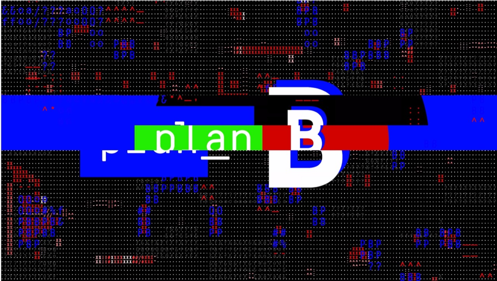
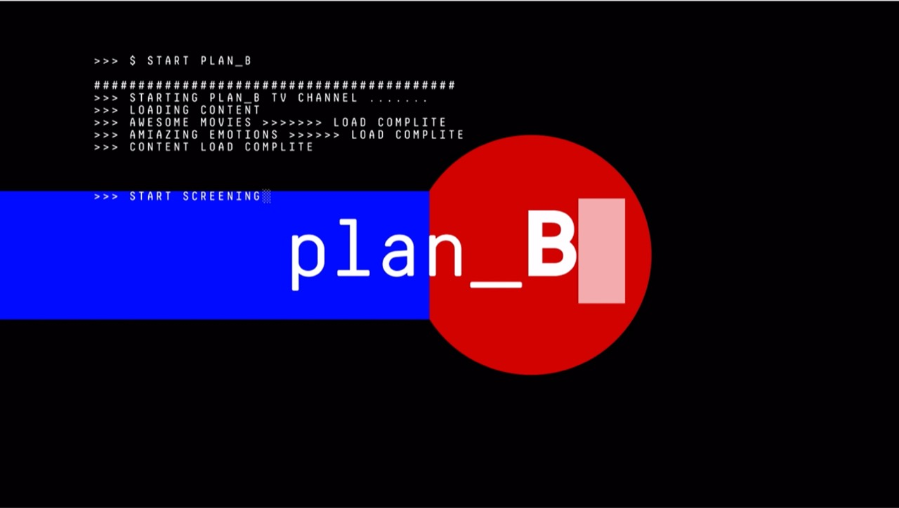
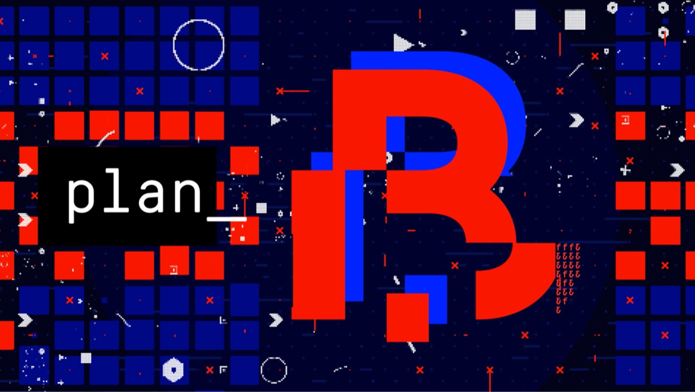
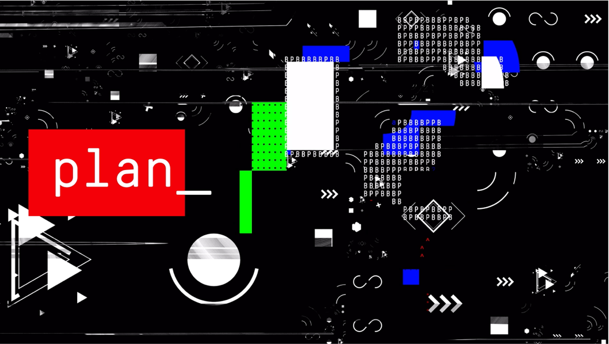
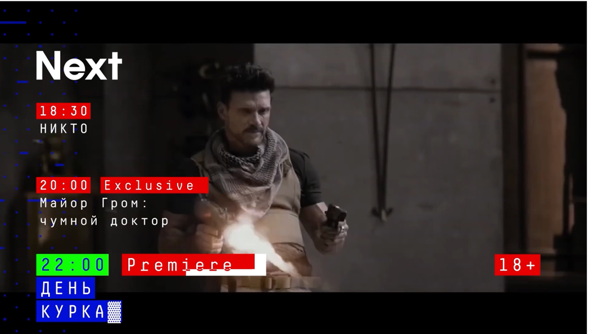

«Сенсоф.Медиа» · 2022
PLAN_B: оформление для канала без правил
Разработали логотип и вариативную дизайн-систему для запуска кабельного киноканала PLAN_B.

Для группы «Сенсоф.Медиа» мы разработали логотип и эфирное оформление нового кабельного киноканала PLAN_B. В сетке соседствуют премьеры, эксклюзивы и фильмы разных жанров. Поэтому мы собрали оформление, в котором визуальный ритм можно менять под программу, сохраняя узнаваемый облик канала.



